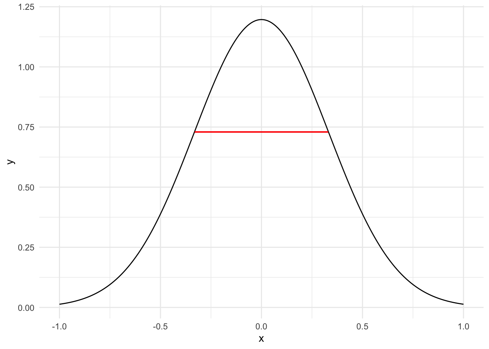
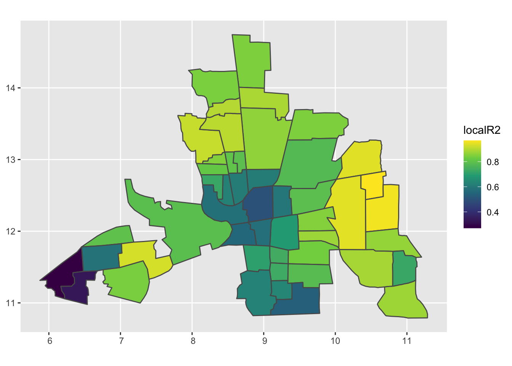

Thursday December 1, 2022
Fitting and interpreting geographic regression
In the last lesson you learned that if the residuals from a linear regression model have significant spatial autocorrelation then inferences made with the model will be suspect.
A common approach to remedy this situation is to modify the linear regression by including a spatial term. The spatial term takes the form of a spatially lagged variable. The spatially lagged variable can be on the response variable or it can be on the residuals or both.
In the absence of domain specific knowledge of what is the best form of the spatial regression model, statistical tests can be used to help you determine the best model.
Another approach is to assume that the relationships between the response variable and the explanatory variables are modified by contextual factors that depend on location. In this case you fit separate regression models at each geographic location.
This approach is quite useful for exploratory analysis (e.g., to show where the explanatory variables are most strongly related to the response variable).
The analogy is local measures of spatial autocorrelation where you estimate an autocorrelation statistic (e.g., Moran’s I) at each location.
The approach is called geographically weighted regression (GWR) or simply geographic regression. GWR is used in epidemiology, particularly for research on infectious diseases and for evaluating health policies and programs.
Since GWR fits a regression model at every observation location, it is not a single model but a procedure for fitting a set of models. This is different from spatial regression. A spatially-lagged Y model, for example, is a single model with spatial terms.
Observations across the domain contribute to the model fit at a particular observation location with nearby observations given more weight than observations farther away.
Weighting is done with a Gaussian function (kernel) defined by a bandwidth. The bandwidth is defined as the distance across the kernel at the inflection points (2nd derivative goes through zero).
library(ggplot2)
x <- seq(from = -1, to = 1, by = .01 )
y <- extremefit::Gaussian.kernel(x)
dydx <- DTWBI::local.derivative.ddtw(y)
dy2dx2 <- DTWBI::local.derivative.ddtw(dydx)
data.frame(x, y, dydx, dy2dx2) |>
ggplot(mapping = aes(x = x, y = y)) +
geom_line() +
geom_segment(x = -.33, y = .73,
xend = .33, yend = .73,
color = "red") +
theme_minimal()
The bandwidth distance is a given fixed value or it is determined through a cross-validation procedure based on the average distance between observation locations. It can also be a function of location.
Linear regression is a model for the conditional mean. The mean of the response variable depends on the explanatory variables. Geographic regressions show how this dependency varies by location.
GWR is used as an exploratory technique for determining where local regression coefficients are different from their corresponding global values.
Returning to the Columbus crime data.
( CC.sf <- sf::st_read(dsn = here::here("data", "columbus"),
layer = "columbus") )## Reading layer `columbus' from data source
## `/Users/jelsner/Desktop/ClassNotes/QG-2022/data/columbus' using driver `ESRI Shapefile'
## Simple feature collection with 49 features and 20 fields
## Geometry type: POLYGON
## Dimension: XY
## Bounding box: xmin: 5.874907 ymin: 10.78863 xmax: 11.28742 ymax: 14.74245
## CRS: NA## Simple feature collection with 49 features and 20 fields
## Geometry type: POLYGON
## Dimension: XY
## Bounding box: xmin: 5.874907 ymin: 10.78863 xmax: 11.28742 ymax: 14.74245
## CRS: NA
## First 10 features:
## AREA PERIMETER COLUMBUS_ COLUMBUS_I POLYID NEIG HOVAL INC CRIME
## 1 0.309441 2.440629 2 5 1 5 80.467 19.531 15.725980
## 2 0.259329 2.236939 3 1 2 1 44.567 21.232 18.801754
## 3 0.192468 2.187547 4 6 3 6 26.350 15.956 30.626781
## 4 0.083841 1.427635 5 2 4 2 33.200 4.477 32.387760
## 5 0.488888 2.997133 6 7 5 7 23.225 11.252 50.731510
## 6 0.283079 2.335634 7 8 6 8 28.750 16.029 26.066658
## 7 0.257084 2.554577 8 4 7 4 75.000 8.438 0.178269
## 8 0.204954 2.139524 9 3 8 3 37.125 11.337 38.425858
## 9 0.500755 3.169707 10 18 9 18 52.600 17.586 30.515917
## 10 0.246689 2.087235 11 10 10 10 96.400 13.598 34.000835
## OPEN PLUMB DISCBD X Y NSA NSB EW CP THOUS NEIGNO
## 1 2.850747 0.217155 5.03 38.80 44.07 1 1 1 0 1000 1005
## 2 5.296720 0.320581 4.27 35.62 42.38 1 1 0 0 1000 1001
## 3 4.534649 0.374404 3.89 39.82 41.18 1 1 1 0 1000 1006
## 4 0.394427 1.186944 3.70 36.50 40.52 1 1 0 0 1000 1002
## 5 0.405664 0.624596 2.83 40.01 38.00 1 1 1 0 1000 1007
## 6 0.563075 0.254130 3.78 43.75 39.28 1 1 1 0 1000 1008
## 7 0.000000 2.402402 2.74 33.36 38.41 1 1 0 0 1000 1004
## 8 3.483478 2.739726 2.89 36.71 38.71 1 1 0 0 1000 1003
## 9 0.527488 0.890736 3.17 43.44 35.92 1 1 1 0 1000 1018
## 10 1.548348 0.557724 4.33 47.61 36.42 1 1 1 0 1000 1010
## geometry
## 1 POLYGON ((8.624129 14.23698...
## 2 POLYGON ((8.25279 14.23694,...
## 3 POLYGON ((8.653305 14.00809...
## 4 POLYGON ((8.459499 13.82035...
## 5 POLYGON ((8.685274 13.63952...
## 6 POLYGON ((9.401384 13.5504,...
## 7 POLYGON ((8.037741 13.60752...
## 8 POLYGON ((8.247527 13.58651...
## 9 POLYGON ((9.333297 13.27242...
## 10 POLYGON ((10.08251 13.03377...Start by fitting a ‘global’ linear regression to the crime rates using income and housing values, as you did earlier. First save the model formula as f.
f <- CRIME ~ INC + HOVAL
( model.lm <- lm(formula = f,
data = CC.sf) )##
## Call:
## lm(formula = f, data = CC.sf)
##
## Coefficients:
## (Intercept) INC HOVAL
## 68.6190 -1.5973 -0.2739The coefficients on the two explanatory variables indicate that crime decreases in areas of higher income and higher housing values.
You compare this result to results from geographic regressions. The functions are in the {spgwr} package.
if(!require(spgwr)) install.packages(pkgs = "spgwr", repos = "http://cran.us.r-project.org")## Loading required package: spgwr## Loading required package: sp## Loading required package: spData## NOTE: This package does not constitute approval of GWR
## as a method of spatial analysis; see example(gwr)The sp part of the package name indicates that the functions were developed to work with S4 spatial objects.
The functions allow you to use S3 simple features by specifying the locations as a matrix. Here you extract the centroid from each census tract as a matrix.
Locations <- CC.sf |>
sf::st_centroid() |>
sf::st_coordinates()## Warning in st_centroid.sf(CC.sf): st_centroid assumes attributes are constant
## over geometries of xLocations |>
head()## X Y
## 1 8.827218 14.36908
## 2 8.332658 14.03162
## 3 9.012265 13.81972
## 4 8.460801 13.71696
## 5 9.007982 13.29637
## 6 9.739926 13.47463These are the X and Y coordinate values specifying the centroid for the first six tracts (out of 49).
To determine the bandwidth for the Gaussian kernel (weighting function) you use the spgwr::gwr.sel() function. You need to specify the arguments, model formula (formula =), the data frame (data =), and the coordinates (coords =) as part of the function call.
The argument coords = is the matrix of coordinates of points representing the spatial locations of the observations. It can be omitted if the data is an S4 spatial data frame from the {sp} package.
( bw <- spgwr::gwr.sel(formula = f,
data = CC.sf,
coords = Locations) )## Bandwidth: 2.220031 CV score: 7473.853
## Bandwidth: 3.588499 CV score: 7479.637
## Bandwidth: 1.374271 CV score: 7404.175
## Bandwidth: 0.8515626 CV score: 7389.293
## Bandwidth: 0.7515898 CV score: 7280.867
## Bandwidth: 0.4667245 CV score: 6319.861
## Bandwidth: 0.290668 CV score: 7474.967
## Bandwidth: 0.5755334 CV score: 6754.626
## Bandwidth: 0.3994769 CV score: 6197.735
## Bandwidth: 0.3597549 CV score: 6320.012
## Bandwidth: 0.4132551 CV score: 6200.674
## Bandwidth: 0.4028088 CV score: 6196.867
## Bandwidth: 0.4040147 CV score: 6196.817
## Bandwidth: 0.4038422 CV score: 6196.816
## Bandwidth: 0.4038829 CV score: 6196.816
## Bandwidth: 0.4038015 CV score: 6196.816
## Bandwidth: 0.4038422 CV score: 6196.816## [1] 0.4038422The procedure makes an initial guess at the bandwidth distance and then fits local regression models at each location using weights that decay defined by the kernel and that bandwidth.
The output shows that the first bandwidth chosen was 2.22 in arbitrary distance units. The resulting prediction skill from fitting 49 regression models with that bandwidth is 7474 units.
The resulting CV score is based on cross validation whereby skill is computed at each location when data from that location is not used to fit the regression models.
The procedure continues by increasing the bandwidth distance (to 3.59) and then computing a new CV score after refitting the regression models. Since the new CV score is higher (7480) than the initial CV score (7474), the bandwidth is changed in the other direction (decreasing from 2.22 to 1.37) and the models again are refit.
With that new bandwidth, the CV score is 7404, which is lower than the initial bandwidth so the bandwidth is decreased again. The procedure continues until no additional improvement in the CV score occurs.
The output shows that no additional improvement in score occurs at a bandwidth distance of .404 units, and this single value is assigned to the object you called bw.
Once the bandwidth distance is determined you use the spgwr::gwr() function to fit the regressions using that bandwidth. The arguments are the same as before but now includes the bandwidth = argument where you specify the object bw.
models.gwr <- spgwr::gwr(formula = f,
data = CC.sf,
coords = Locations,
bandwidth = bw)The model and observed data are assigned to a list object with element names listed using the names() function.
models.gwr |>
names()## [1] "SDF" "lhat" "lm" "results" "bandwidth" "adapt"
## [7] "hatmatrix" "gweight" "gTSS" "this.call" "fp.given" "timings"The first element is SDF containing the model output as a S4 spatial data frame.
class(models.gwr$SDF)## [1] "SpatialPointsDataFrame"
## attr(,"package")
## [1] "sp"The structure of the spatial data frame is obtained with the str() function and by setting the max.level argument to 2.
str(models.gwr$SDF,
max.level = 2)## Formal class 'SpatialPointsDataFrame' [package "sp"] with 5 slots
## ..@ data :'data.frame': 49 obs. of 7 variables:
## ..@ coords.nrs : num(0)
## ..@ coords : num [1:49, 1:2] 8.83 8.33 9.01 8.46 9.01 ...
## .. ..- attr(*, "dimnames")=List of 2
## ..@ bbox : num [1:2, 1:2] 6.22 11.01 10.95 14.37
## .. ..- attr(*, "dimnames")=List of 2
## ..@ proj4string:Formal class 'CRS' [package "sp"] with 1 slotHere there are five slots with the first slot labeled @data indicating that it is a data frame. The number of rows and columns in the data frame are listed with the dim() function.
models.gwr$SDF |>
dim()## [1] 49 7There are 49 rows and 7 columns. Each row corresponds to a tract and information about the regressions localized to the tract is given in the columns. Column names are listed with the names() function.
models.gwr$SDF |>
names()## [1] "sum.w" "(Intercept)" "INC" "HOVAL" "gwr.e"
## [6] "pred" "localR2"They include the sum of the weights sum.w (the larger the sum the more often the tract is included in the local regressions–favoring smaller counties and ones farther from the borders of the domain), the three regression coefficients one for each of the explanatory variables (INC and HOVAL) and an intercept term, the residual (gwr.e), the predicted value (pred) and the local goodness-of-fit (localR2).
You create a map displaying where income has the most and least influence on crime by first attaching the income coefficient from the data frame (column labeled INC) to the simple feature data frame since the order of the rows in the SDF matches the order in the simple feature data frame and then using functions from the {ggplot2} package.
CC.sf$INCcoef <- models.gwr$SDF$INC
ggplot(CC.sf) +
geom_sf(aes(fill = INCcoef)) +
scale_fill_viridis_c()
Most tracts have coefficients with values less than zero. Recall the global coefficient is less than zero. But areas in yellow show where the coefficient values are greater than zero indicating a direct relationship between crime and income.
How about the coefficients on housing values?
CC.sf$HOVALcoef <- models.gwr$SDF$HOVAL
ggplot(CC.sf) +
geom_sf(aes(fill = HOVALcoef)) +
scale_fill_viridis_c()
While the global coefficient is negative indicating crime rates tend to be lower in areas with higher housing values, the opposite is the case over much of city especially on the south side.
You put the vector of GWR predictions into the CC.sf simple feature data frame giving it the column name predGWR and then map the predictions using functions from the {tmap} package.
CC.sf$predGWR <- models.gwr$SDF$pred
tmap::tm_shape(CC.sf) +
tmap::tm_fill("predGWR",
title = "Predicted crimes\nper 1000") +
tmap::tm_layout(legend.outside = TRUE)## Warning: Currect projection of shape CC.sf unknown. Long-lat (WGS84) is assumed.
The geographic regressions capture the spatial pattern of crimes across the city. The spread of predicted values matches the observed spread better than the linear model. The pattern of predicted crime is also smoother than with a global OLS regression.
Where is the relationship between crime and the two explanatory variables the tightest? This is answered by mapping the R squared coefficient for each of the models.
CC.sf$localR2 <- models.gwr$SDF$localR2
ggplot(CC.sf) +
geom_sf(aes(fill = localR2)) +
scale_fill_viridis_c()
Although crime rates are highest in the center, the relationship between crime and income and housing values is largest in tracts across the eastern part of the city.
This type of nuanced exploratory analysis is made possible with GWR.
Also, when fitting a regression model to data that vary spatially you are assuming an underlying stationary process. This means you believe the explanatory variables ‘provoke’ the same response (statistically) across the domain. If this is not the case then it shows up in a map of correlated residuals.
So a way to check the assumption of a stationary process is to use geographic regression. If the coefficients from the geographic regressions match closely the global coefficients then you can assume a stationary process.
That wraps up the material for this semester. I hope you learned a few things and are now comfortable working with data in R. I also hope you sign up for my Applied Spatial Statistics course this spring. You will learn more about spatial statistical analyses and modeling and continue your journey through R’s ecosystem for spatial statistics. The notes for are also on my GitHub site.
Have a wonderful holiday break!